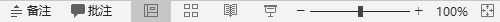
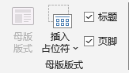

视图
View
- 内容 Contents
- 演示文稿视图
- 母版视图
- 显示
演示文稿视图 Presentation Views
- 视图在PPT环境的右下角也有体现，同缩放标尺在一起
- 普通 Normal
- 大纲视图 Outline View
- 幻灯片浏览 Slide Sorter
- 备注页 Notes Page
- 阅读视图 Reading View
演示文稿视图

状态栏中的视图
母版视图 Master Views
母版视图
- 幻灯片母版 Slide Master
- PPT 的高效开发离不开幻灯片母版的使用
- 应该首先在幻灯片母版中设计页面版式，再应用到相应的幻灯片上
- 如果需要调整页面版式，只需要修改幻灯片母版即可
- 每个新建的 PPT 都有一些默认的版式
- 每个版式都有名字
- 充分、高效利用占位符设计版式

幻灯片母版中的占位符
- 讲义母版 Handout Master
- 打印并分发给用户，便于在用户在听讲观看过程中参考使用
- 多张幻灯片打印到一张纸上
- 主要设置有：页眉、页脚、编号和时间
- 当然也可以给自己作为教案使用
- 备注母版 Notes Master
- 给幻灯片添加注释，主要是供演讲者使用，在放映时起到提示和辅助的作用
- 主要设置同讲义母版，多了"幻灯片图像"和"正文"
讲义母版、备注母版可以设置的样式不多
在打印预览页面才能看到讲义母版、备注母版的实际效果
练习 Drill
- 设计首页幻灯片母版
- 设计章节页幻灯片母版
- 设计内容页幻灯片母版
- 设计总结页幻灯片母版
- 设计作业页幻灯片母版
- 设计空白页幻灯片母版